Captain’s Log
Relaunching my website has been on my to-do list for most of the year. I finally managed to carve out some time to get this project started.
In doing this, I had two main objectives for the new website:
- Have a proper website to showcase my portfolio and social media links
- Deploy the website using
GitHub Actions
Both Hugo and GitHub Actions were new tools to me that I wanted to learn. While this isn’t a full fledged tutorial, I did want to share my experiences (and code snippets) from getting the new site up and running. I would still highly recommend reading the documentation available for Hugo, GitHub Pages and GitHub Actions. Please see the bottom of this post for links.
Hugo - What is it?
From the Hugo website:
Hugo is a general-purpose website framework. Technically speaking, Hugo is a static site generator. Unlike systems that dynamically build a page with each visitor request, Hugo builds pages when you create or update your content.
Why I Chose to Use Hugo
For my purposes, a static site using a website framework is more than adequate to achieve my objectives. I am going for a minimalist look and also wanted small web pages for faster deployment. I was more concerned with the CI/CD portion of this exercise than the site itself.
Installing Hugo
Instructions on how to install Hugo can be found here.
I am using a MacBook, so I used brew to install Hugo:
brew install hugo
Quickstart Guide, but with PaperMod Theme
Once Hugo is installed, there are only a few lines of code that need to be ran to get a bare-bones website built. Blending together the code from the Hugo Quickstart guide and the PaperMod Hugo Theme documentation, running the following code will build a website with theme I am using.
In the first 3 lines below, modify the values of GH_REPOS, SITENAME and GH_USERNAME to be reflective of your own setup:
export GH_REPOS=~/Documents/GitHub # Update with your GitHub repos folder here
export SITENAME=my-hugo-website # Update with your site name / repo name
export GH_USERNAME=traviscancode604 # Update with your username
cd $GH_REPOS
hugo new site $SITENAME
cd $SITENAME
git init
# This is where we select the theme
git submodule add --depth=1 https://github.com/adityatelange/hugo-PaperMod.git themes/PaperMod
rm config.toml
# Refer to docs for a sample config file layout.
echo baseURL: https://$GH_USERNAME.github.io/$SITENAME >> config.yml
cat <<EOF >>config.yml
title: ExampleSite
paginate: 5
theme: PaperMod
enableRobotsTXT: true
buildDrafts: false
buildFuture: false
buildExpired: false
googleAnalytics: UA-123-45
minify:
disableXML: true
minifyOutput: true
params:
env: production # to enable google analytics, opengraph, twitter-cards and schema.
title: ExampleSite
description: "ExampleSite description"
keywords: [Blog, Portfolio, PaperMod]
author: Me
# author: ["Me", "You"] # multiple authors
images: ["<link or path of image for opengraph, twitter-cards>"]
DateFormat: "January 2, 2006"
defaultTheme: auto # dark, light
disableThemeToggle: false
ShowReadingTime: true
ShowShareButtons: true
ShowPostNavLinks: true
ShowBreadCrumbs: true
ShowCodeCopyButtons: false
ShowWordCount: true
ShowRssButtonInSectionTermList: true
UseHugoToc: true
disableSpecial1stPost: false
disableScrollToTop: false
comments: false
hidemeta: false
hideSummary: false
showtoc: false
tocopen: false
assets:
# disableHLJS: true # to disable highlight.js
# disableFingerprinting: true
favicon: "<link / abs url>"
favicon16x16: "<link / abs url>"
favicon32x32: "<link / abs url>"
apple_touch_icon: "<link / abs url>"
safari_pinned_tab: "<link / abs url>"
label:
text: "Home"
icon: /apple-touch-icon.png
iconHeight: 35
# profile-mode
profileMode:
enabled: false # needs to be explicitly set
title: ExampleSite
subtitle: "This is subtitle"
imageUrl: "<img location>"
imageWidth: 120
imageHeight: 120
imageTitle: my image
buttons:
- name: Posts
url: posts
- name: Tags
url: tags
# home-info mode
homeInfoParams:
Title: "Hi there \U0001F44B"
Content: Welcome to my blog
socialIcons:
- name: twitter
url: "https://twitter.com/"
- name: stackoverflow
url: "https://stackoverflow.com"
- name: github
url: "https://github.com/"
analytics:
google:
SiteVerificationTag: "XYZabc"
bing:
SiteVerificationTag: "XYZabc"
yandex:
SiteVerificationTag: "XYZabc"
cover:
hidden: true # hide everywhere but not in structured data
hiddenInList: true # hide on list pages and home
hiddenInSingle: true # hide on single page
editPost:
URL: "https://github.com/<path_to_repo>/content"
Text: "Suggest Changes" # edit text
appendFilePath: true # to append file path to Edit link
# for search
# https://fusejs.io/api/options.html
fuseOpts:
isCaseSensitive: false
shouldSort: true
location: 0
distance: 1000
threshold: 0.4
minMatchCharLength: 0
keys: ["title", "permalink", "summary", "content"]
menu:
main:
- identifier: categories
name: categories
url: /categories/
weight: 10
- identifier: tags
name: tags
url: /tags/
weight: 20
- identifier: example
name: example.org
url: https://example.org
weight: 30
# Read: https://github.com/adityatelange/hugo-PaperMod/wiki/FAQs#using-hugos-syntax-highlighter-chroma
pygmentsUseClasses: true
markup:
highlight:
noClasses: false
# anchorLineNos: true
# codeFences: true
# guessSyntax: true
# lineNos: true
# style: monokai
EOF
hugo new posts/my-first-post.md
Push to GitHub
Create a repo for the project on GitHub and push the contents of your local repo to GitHub.
Note: If you happened to stumble across this post and are brand new to
GitHub, checkout these docs if you need help with pushing a repo.
GitHub Actions
As of August 2022, you can now deploy a GitHub Pages site directly from a repo using a custom GitHub Actions workflow. This feature is in beta, but it significantly streamlines the process of using GitHub Actions to deploy a GitHub Pages site.
Quick Note on the Workflow Example from Hugo Website
The Hugo documentation for hosting on GitHub is still written in the “traditional method” (wasn’t sure what to call it with this new beta feature). That is, the context of the documentation is using a workflow to create a branch for the generated website content as a publishing source, and deploying a GitHub Pages site from this newly created branch. The instructions in the Hugo documentation are still relevant (at the time of writing) - you can follow them and successfully deploy a GitHub Pages site.
After trying both methods, I prefer the custom GitHub Actions workflow.
Using Custom GitHub Actions Workflow
This new feature for a custom GitHub Actions workflow to build and deploy a GitHub Pages site excites me. The feature eliminates the need for a branch as a publishing source to deploy your GitHub Pages site. Personally, I find the custom GitHub Actions workflow a bit more intuitive to use than using a new branch as a publishing source (but that could be a matter of opinion). I went a step further on the starter workflow GitHub provided for my website and set it up to build and deploy only on merged PRs, instead of using pushes to the main branch as a trigger. I won’t get into the details in this post (feel free to checkout my workflow), but I did want to show how easy it is to get a GitHub Pages site up and running with a custom GitHub Actions workflow.
It only takes 5 clicks and requires no previous knowledge about CI/CD workflows:
-
Under Settings -> Pages (where you would normally deploy from a branch), Click the dropdown menu for Source: 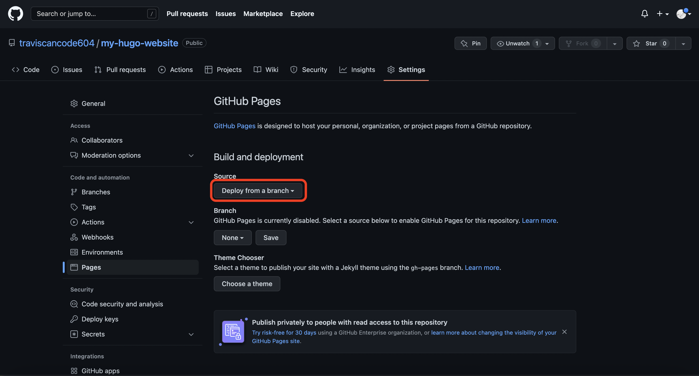
-
Click GitHub Actions (Beta) 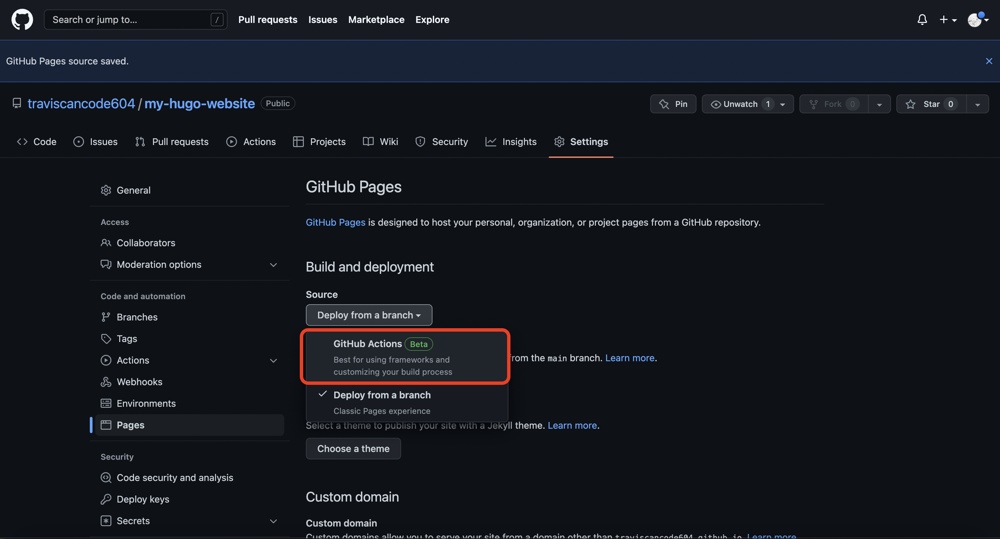
-
Click Configure 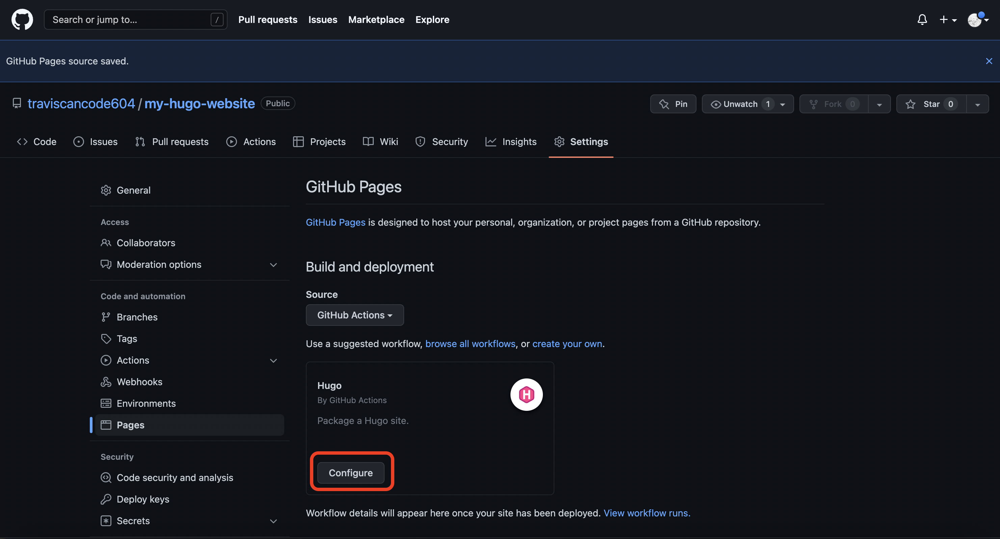
-
Click Start Commit 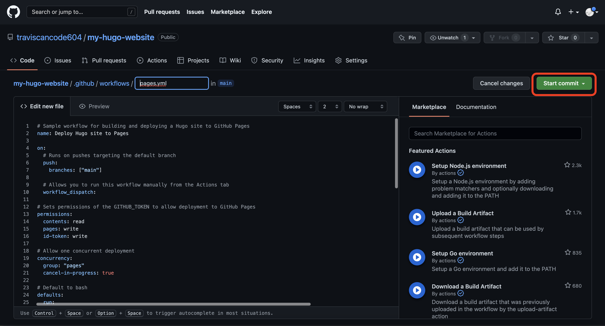
-
Click Commit new file 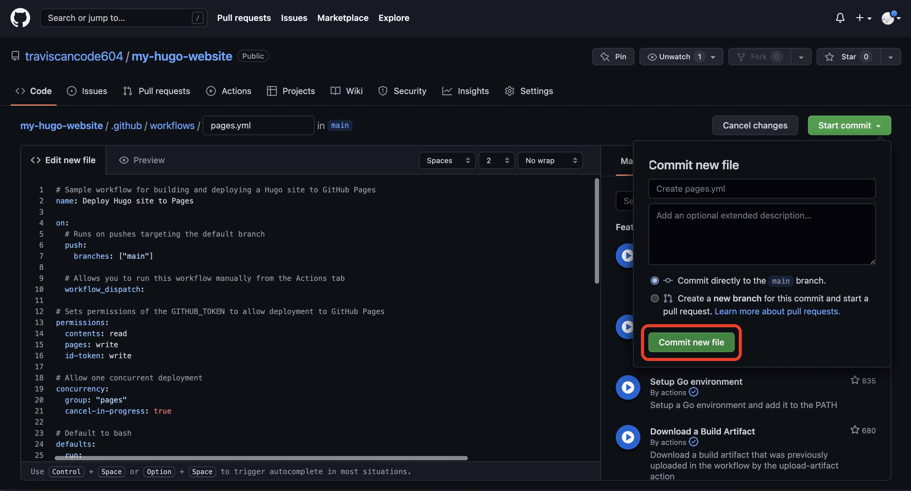
You will now have a starter workflow in the .github/workflows directory:
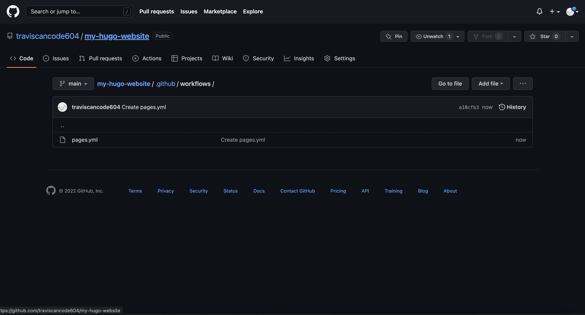
Now you can click Actions and see the status of the workflow: 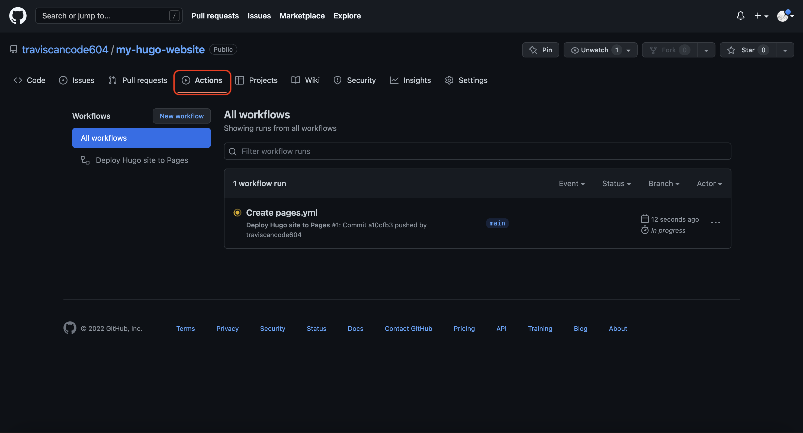
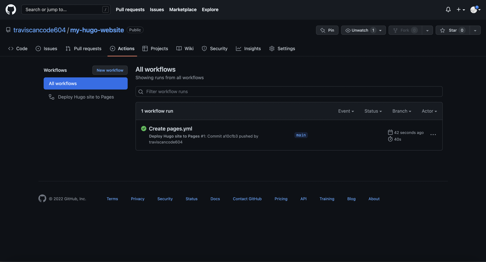
Your repo will now have a github-pages environment:
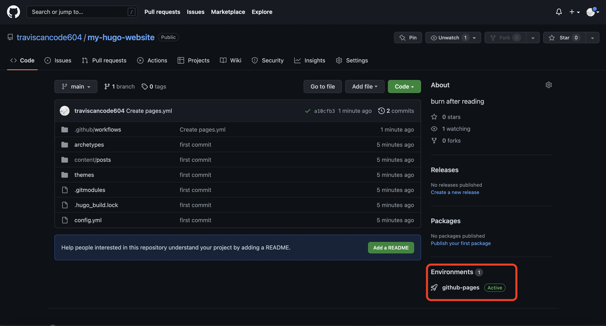
If you click into github-pages, you can view the deployment:
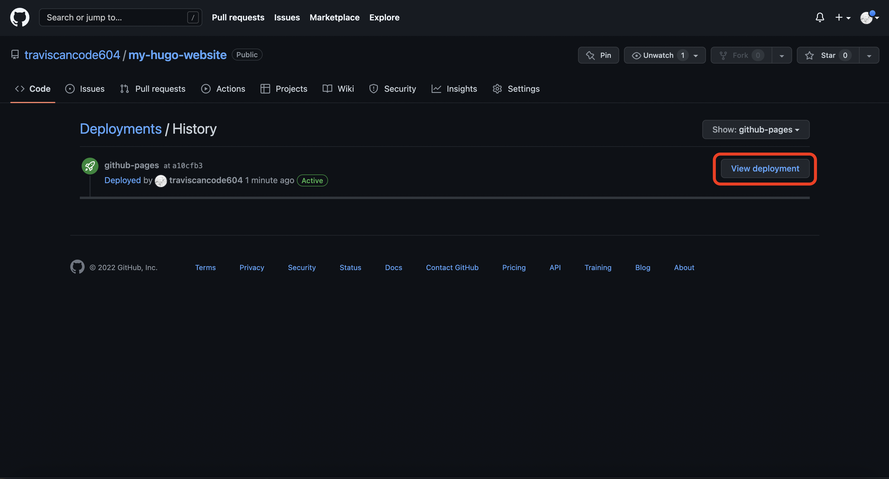
Voilà! 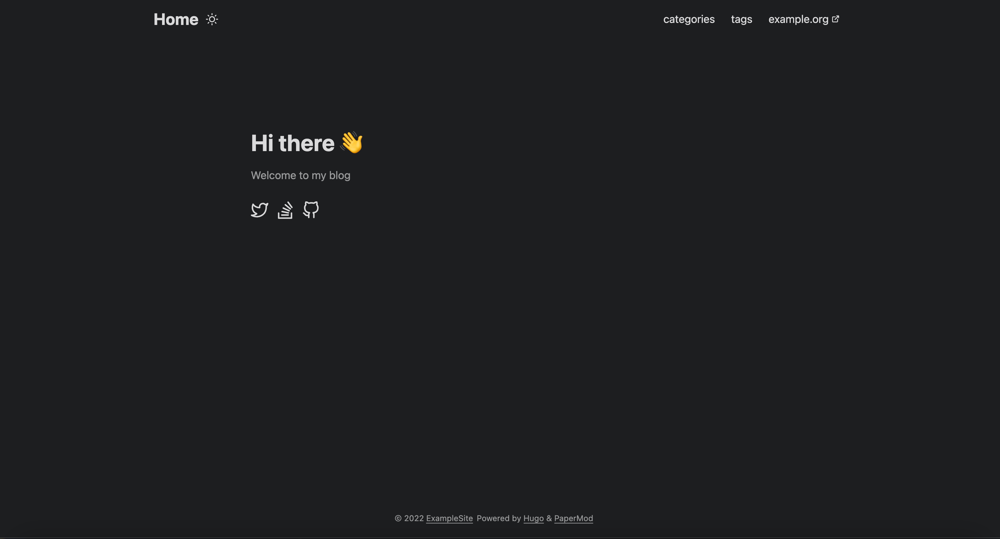